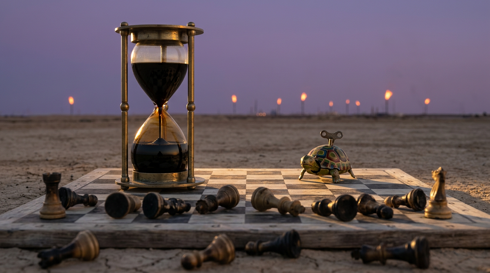

Irán No Necesitaba Ganar la Guerra. Solo Tenía que Esperar.
Parte de The Language of Power · Capítulo 4 de 4 →El Fantasma de Robespierre Paró en una Estación de Servicio, y en Algún Lugar de Teherán un Hombrecito de Plástico Se Largó a Reír
El sábado, el fantasma de Robespierre volvió a Francia, y nadie tuvo la delicadeza de recordarle cómo le fue la primera vez.
No trajo el Terror. Trajo los grandes éxitos. Autos ardiendo a lo largo del Canal Saint-Martin. Bancos destrozados. Una tienda de Lacoste saqueada, el cocodrilito por fin viendo un poco de acción. En Limoges, incendiaron la municipalidad. En Marsella, manifestantes vestidos de negro entraron al Ayuntamiento y lo redecoraron en estilo anarquista, que es aerosol con sentimientos. En Lyon prendieron fuego la oficina de turismo, lo cual es o una declaración política o la reseña de una estrella más agresiva de la historia de la humanidad… y si alguna vez pagaste un tour a pie por cualquier lado, no estás del todo en contra.
Un cartón de bingo de tácticas revolucionarias. Todas las casillas marcadas. El cartón estaba en un cajón desde 1789, con la guillotina plegada al lado como una reposera, esperando que alguien le soplara el polvo a la cuchilla.
Y la locura, como sabe cualquiera que haya ido a un casamiento familiar, es contagiosa. A la noche ya había cruzado los Alpes. En Milán, una marcha contra el costo de vida se desmadró y la policía despejó la plaza frente a la catedral con gases lacrimógenos. El domingo Milán volvió a la carga: piedras, negocios saqueados, vidrieras rotas alrededor del Duomo, y más de 200 detenidos. En Bolonia sacaron los camiones hidrantes. Bruselas, Lisboa y Albania tuvieron sus propias versiones. Y en el sur de Italia, los camioneros cortaron rutas en protesta por el precio del combustible, que la cobertura vinculó directamente con la guerra en Irán. Acordate de los camioneros. Son el hilo del que cuelga todo este post.
Prestá atención, saco de cartílago adicto al doomscroll. Esta es la parte donde se pone interesante, y vas a querer haberte terminado el café.
La Guillotina Siempre Estuvo en el Garage
La razón de todo esto, nos dicen, es simple: el costo de vida y el precio del combustible. La gente se hartó.
Es casi correcto, y la versión completa es mejor, así que hagámosla bien.
Esto no empezó con la nafta. Empezó el mes pasado en colegios secundarios de los suburbios obreros del norte de París, donde los chicos se enojaron por la falta de docentes y las aulas que se caían a pedazos. Chicos. Después le creció la barba, se puso un chaleco refractario y se convirtió en un movimiento sobre la desigualdad, el gasto público y el precio de todo. Una manifestante de 19 años en París, Lola, se lo resumió a Reuters en tres partes: la vida cuesta demasiado, el combustible cuesta demasiado, y a los estudiantes los lastiman por pedir docentes.
Los números dependen de a quién le preguntes, que es como sabés que es una protesta francesa de verdad. El Ministerio del Interior contó unas 550.000 personas marchando el sábado, 110.000 de ellas en París. La CGT contó 800.000. En algún lugar entre esas dos cifras está la verdad, probablemente tomándose un cafecito y negándose a tomar partido.
La cuenta del fin de semana llegó el lunes. Casi 2.400 detenidos en todo el país. Alrededor de 1.000 policías y agentes de seguridad heridos. Pérdidas para los comercios de cientos de millones de euros. El ministro del Interior, Laurent Nuñez, salió en televisión y admitió que la policía “perdió el control” en algunas ciudades, que no es una frase que un ministro del Interior diga por diversión. Y un manifestante en París murió de un paro cardíaco durante las protestas, según la policía. Ahí no va ningún chiste. Es una persona.
Y no terminó. Los chalecos amarillos convocaron un “segundo acto” para el sábado 24 de octubre, otro la semana siguiente y una gran manifestación el 5 de noviembre. El gobierno, en minoría, enfrenta una votación de presupuesto el martes. El cartón de bingo tiene segunda página.
La línea del gobierno es que la violencia fue obra de una minoría. El primer ministro Sébastien Lecornu culpó a la extrema izquierda y a delincuentes comunes, y dijo que nadie va a imponer una agenda política con violencia. Macron prometió juzgar a los responsables. Y vale decirlo claro: la mayoría de ese medio millón de personas marchó en paz, y los propios manifestantes les atribuyeron los destrozos a revoltosos que fueron a romper cosas. Las dos cosas pueden ser ciertas el mismo sábado.
Con todo eso ardiendo en mi pantalla, me puse a pensar. Lo cual, te va a decir mi esposa, es cuando empiezan los problemas.
Me juego una medialuna calentita a que Emmanuel Macron está furioso con Donald Trump. Es mi apuesta, no una cita suya, y no tengo fuentes en el Elíseo, tengo una laptop en Belgrano. Pero mirá los ingredientes. El precio del combustible es una parte enorme de lo que Francia está reclamando en la calle. El combustible está caro porque el estrecho de Ormuz es zona de guerra desde febrero. Y la guerra es una guerra estadounidense e israelí contra Irán, apilada encima de un año de aranceles que nadie en Europa pidió. No hace falta un doctorado en quejas galas para unir los puntos. Hace falta un ticket de la estación de servicio.
Y acá viene la frutilla del postre. En junio, cuando la Casa Blanca firmó su memorando para terminar la guerra, el Presidente lo firmó en Francia. En Versalles. De todas las direcciones de la Tierra, eligió el palacio más famoso por una clase dirigente que no se dio cuenta del precio del pan.
Esto no se puede escribir. Bueno, yo puedo. Lo estoy haciendo. Pero no debería tener que hacerlo.
STOP.
Pensabas que este era un post sobre Francia. Yo también. Acabo de pegar una vuelta en U cruzando seis carriles del Périphérique, le hice fuck you a un Citroën, rocé a un mimo y estacioné en Estados Unidos. Abrochate, que se pone personal y un poco vergonzoso para un amigo mío.
El Evangelio Según John Hussein
Tengo un amigo que es un ejemplar perfecto del típico tipo estadounidense. Y por “típico” quiero decir un hombre criado adentro del sistema, al que el sistema le falló en la escuela y nunca le mandó un mail de seguimiento.
Estábamos hablando de la guerra en la vereda, esperando a los chicos a la salida del colegio. Y me dijo, y lo cito de memoria con la mano sobre una pila de enciclopedias:
Necesito que te quedes con eso como me tuve que quedar yo.
Mi cerebro hizo una vuelta carnero, cayó de cuello y se quedó tirado en la colchoneta, mirando el techo, esperando a un paramédico que nunca iba a llegar. Por dónde arrancás. ¿El nombre? ¿La década? ¿El país?
A lo largo de una sola conversación, confundió Irán con Irak unas cincuenta veces. Estoy bastante seguro de que si le daba un mapa, no podía señalar ninguno de los dos. Si le daba un globo terráqueo, intentaba jugar al bowling.
Bueno. Esta es la parte que no esperaba escribir.
No se equivoca sobre lo que le importa.
En Estados Unidos Nadie Está Peleando contra Irán
A mi amigo no le importa la guerra. No te podría decir quién va ganando, qué es el estrecho de Ormuz ni por qué alguien lo querría. Lo que sí te puede decir, al centavo, es lo que le cuesta llenar el tanque de la camioneta.
Y está en enorme compañía. El 8 de octubre, el promedio nacional del galón de nafta común era de 4,36 dólares, más de un 45% por encima del 28 de febrero, el día en que Estados Unidos e Israel arrancaron la guerra. La encuesta de AP-NORC mostraba que apenas el 26% de los estadounidenses aprobaba cómo el Presidente maneja la economía, un nuevo mínimo. Alrededor de siete de cada diez dijeron que su manejo del costo de vida fue peor de lo que esperaban, incluida más o menos la mitad de los republicanos.
Ahí está todo el electorado en una oración. La mayoría de los estadounidenses no está peleando contra Irán. La mayoría está peleando contra un surtidor, un ticket del súper y un dueño de departamento, y pierde las tres al mejor de cinco.
Así que imaginate la guerra desde Teherán. Imaginate que sos el estratega con el peor trabajo del planeta. No podés vencer al ejército de Estados Unidos. Nadie puede vencer al ejército de Estados Unidos. Para eso lo tienen.
Pero en realidad no estás peleando contra el ejército de Estados Unidos. Estás peleando contra un gobierno. Y un gobierno, a diferencia de un ejército, tiene la fecha de vencimiento impresa en el fondo de la lata.
A Irán Solo le Hizo Falta Leer un Calendario

Comparen y contrasten, como decían mis profesores del secundario antes de renunciar.
Venezuela. El 3 de enero, fuerzas estadounidenses entraron en Caracas, capturaron a Nicolás Maduro y a su esposa, Cilia Flores, y se los llevaron a Nueva York para enfrentar cargos por narcotráfico. En más o menos un día, la presidenta interina, Delcy Rodríguez, que al principio lo había llamado un saqueo ilegal de los recursos del país, dio un volantazo y terminó ofreciéndole a Washington una agenda de cooperación de “desarrollo compartido.” El Presidente anunció que Estados Unidos iba a manejar el país. Dijo que Rodríguez le había dicho a Marco Rubio, según su versión, “Vamos a hacer lo que ustedes quieran.”
Eso no es una guerra. Es un valet parking.
Irán. El 28 de febrero, los primeros ataques de Estados Unidos e Israel mataron al Líder Supremo, el ayatolá Alí Jamenei. No hay forma más dura de empezar una guerra. E Irán, a diferencia de Venezuela, no se tiró panza arriba. Fue directo al único punto de presión que llega a todas las mesas de cocina del planeta: el estrecho de Ormuz, la garganta angosta por donde pasaba cerca del 20% del petróleo y el combustible del mundo antes de la guerra.
Apretás la garganta y no tenés que ganar ni una batalla. Solo tenés que hacer que ir a trabajar le salga a todo el mundo más caro que el alquiler. El viernes, el Brent rozaba los 110 dólares el barril. Eso no es un misil. Es un impuesto, cobrado a todo el planeta por un país que ni siquiera tiene que recaudarlo, y cada centavo cae en el escritorio del hombre que empezó la guerra.
Esa es la estrategia como yo la leo, y la repito en el castellano más llano que tengo: Irán dejó de pelear contra el pueblo estadounidense en el momento en que entendió que el pueblo estadounidense no estaba peleando contra Irán. Empezó a pelear contra las encuestas del gobierno. El petróleo es la bala. El calendario es el arma.
El Frente Lego
Y después está la parte que admiro genuinamente, como admirás a un estafador que te roba la billetera y te deja una mejor.
Irán armó un departamento de dibujitos.
Poco después de los ataques de febrero, el instituto estatal Revayat-e Fath de Irán publicó una animación de dos minutos en estilo de ladrillitos de juguete. Una versión de plástico del Presidente, flanqueado por un Netanyahu de plástico y un diablito de plástico, hojeando un álbum que decía “el archivo Epstein,” y después apretando un gran botón rojo. Después vinieron más. Un grupo que se hace llamar Explosive Media, y que se presenta como un “equipo iraní de animación estilo Lego,” empezó a sacarlos en inglés, para el público fuera de Irán. Bandas de sonido de rap hechas con IA. Misiles de juguete lloviendo sobre ciudades de juguete. Un Presidente de juguete tirándoles una silla a sus generales.
Cuando se anunció el alto el fuego de abril, Explosive Media publicó uno nuevo con un texto que decía, todo en mayúsculas a los gritos, “Trump surrendered. IRAN WON.” Trump se rindió. IRÁN GANÓ.
YouTube terminó bloqueando la cuenta. Para entonces la pasta de dientes no solo estaba afuera del tubo: tenía contrato discográfico y puesto de merchandising.
Un investigador del Institute for Strategic Dialogue, Joseph Bodnar, le dijo a AFP que es una estrategia de propaganda de guerra pensada para la era de la basura hecha con IA y la amplificación algorítmica. Que es la forma educada de think tank de decir: se dieron cuenta de que un dibujito del Presidente haciendo el ridículo viaja más lejos que un misil balístico, y sale más barato por kilómetro.
Y, reconozcamos lo feo, lo aprendieron mirando. AFP señaló que el gobierno de Trump usaba contenido generado con IA en sus propias redes mucho antes de la guerra. Irán simplemente tomó prestada el arma y la dio vuelta. Todos los regímenes tienen un ministerio de propaganda. Este tiene una caja de juguetes, un rapero hecho de matemática y un rencor con clave de wifi.
¿Es una campaña de difamación? Es propaganda estatal de un gobierno que les hizo cosas genuinamente monstruosas a su propia gente, y no voy a hacer de cuenta que no. Pero es propaganda estatal que entendió la consigna: no necesitás convencer a los estadounidenses de que Irán es bueno. Solo necesitás que estén molestos, fundidos y riéndose del que manda, todo al mismo tiempo.
Tres de tres.
La Paz Siempre Está a Dos Semanas
Ahora mirá el otro lado del tablero.
Desde febrero, la Casa Blanca anuncia la paz como una app del clima anuncia sol. Una y otra vez, con total seguridad, mientras vos estás bajo la lluvia.
Abril: un alto el fuego de dos semanas. Se tambaleó en días.
17 de junio: un memorando de entendimiento, firmado en Versalles, que levantó el bloqueo naval estadounidense a los puertos iraníes y abrió la puerta a excepciones a las sanciones petroleras y a fondos congelados, con sesenta días para cerrar un acuerdo final. A los críticos del propio bando del Presidente no les gustó nada. El senador Ted Cruz dijo que al Presidente lo estaban asesorando muy mal. En semanas se había desarmado en nuevos combates, el bloqueo volvió en julio, y el plazo de sesenta días venció en agosto sin acuerdo final.
1 de agosto: el Presidente dijo que había cancelado un ataque planeado porque ya se habían acordado los “perímetros de un acuerdo.” Irán, días después, negó estar en negociaciones.
7 de octubre: en un acto en San Antonio, dijo que un acuerdo “no es algo que yo realmente quiera hacer.”
8 de octubre: en su propia plataforma, por escrito: “No vamos a atacar a Irán en ningún momento antes de las Elecciones Legislativas que se celebrarán en Estados Unidos el 3 de noviembre.”
Volvé a leer esa última con el ojo frío de un hombre en Teherán.
Eso no es una amenaza. Es una agenda. El ejército más poderoso del planeta acaba de publicar sus horarios disponibles como la recepcionista de un dentista. Bloomberg informó que los operadores de petróleo prácticamente dejaron de reaccionar a lo que dice el Presidente sobre Irán, porque las negociaciones siempre están a punto de cerrarse y nunca se cierran. Cuando la gente a la que le pagan millones por estar pendiente de cada palabra tuya deja de estar pendiente, ya no movés los mercados. Sos música funcional en un ascensor al que nadie se acuerda de haber subido.
Así que las concesiones siguen llegando. El bloqueo levantado, después vuelto a imponer. Las excepciones ofrecidas. El ataque cancelado. El calendario anunciado. Y cada semana la nafta sigue cara, las encuestas siguen bajando, y en algún lugar un tipo con un equipo de animación de ladrillitos abre un proyecto nuevo.
Lo único que Irán tenía que hacer era esperar a noviembre.
Esa es toda la teoría. No necesitaban vencerlo. Necesitaban aguantar más que un ciclo de noticias, y Estados Unidos tiene la capacidad de atención de un pez dorado al que le dieron un celular. Llegar al 3 de noviembre con la nafta arriba de cuatro dólares y dejar que los votantes hagan lo que ninguna armada pudo. Y después, supongo, arrodillarse ante el Dios Primigenio del crudo que tengan en el sótano del Ministerio de la Paciencia y agradecerle por el regalo del calendario electoral estadounidense, lo único en Washington que llega a horario.
STOP. Creo que Me Comí la Slopaganda
Esta es la parte en que discuto conmigo mismo, porque si no lo hace el comentario más votado, y lo hace peor.
Uno. “Irán ganó” es literalmente su eslogan. Llegué a mi brillante conclusión independiente tomando un café en Buenos Aires, y después descubrí que un equipo de animación de juguete en Teherán había publicado exactamente esas palabras en abril, en mayúsculas, con una base de rap. O soy un observador geopolítico agudo, o soy el público objetivo y la publicidad funcionó. Me gustaría creer lo primero. Mi historial de navegación sugiere lo segundo.
Dos. Irán perdió muchísimo. Su Líder Supremo murió el primer día. Sus puertos estuvieron bloqueados casi todo el año. Su economía era un desastre antes de la guerra y ahora está peor. Para un régimen, “ganar” puede no significar nada más que seguir ahí. Para la gente que vive bajo ese régimen, que siga ahí no es una victoria. Es el problema. No quiero que nada de este post se lea como un aplauso al gobierno de Teherán. Mi punto es sobre la palanca, no sobre quién merece salir ganando.
Tres. Una mala elección legislativa no es una guerra perdida. El Presidente no está en la boleta el 3 de noviembre. El Congreso sí. Y su base aguanta: en la misma encuesta de AP-NORC, el 67% de los republicanos dijo que los factores fuera de su control tienen más culpa de los precios altos. Y las encuestas no son votos. Hay gente que estaba “a punto de comerse una piña en el estómago” en octubre y se despertó perfecta en noviembre más veces de las que puedo contar.
Cuatro. El calendario corta para los dos lados. The Wall Street Journal informó, citando a funcionarios estadounidenses, que el Presidente les dijo a sus asesores que espera volver a bombardear Irán después de las legislativas. Así que es posible que los dos lados estén esperando la misma fecha, por razones opuestas. Lo cual no es una estrategia. Son dos tipos en una sala de espera, cada uno convencido de que el médico viene a buscar al otro.
Cinco. Me la agarré con mi amigo. Muchísimos estadounidenses saben perfectamente dónde queda Irán, y el que no sabe igual tiene toda la razón sobre lo que le toca la vida, que es el precio en el surtidor. No distinguir Irán de Irak no hace que se equivoque sobre la cuenta del súper. Lo hace un votante. Esa es la parte que asusta, y también, sinceramente, la parte democrática. Dios lo bendiga.
Sostené las cinco. El núcleo sigue en pie, creo, y es más chico y más filoso que donde arranqué: en una guerra contra un gobierno y no contra un país, el arma más barata es la paciencia, y la más cara es un litro de nafta.
De Vuelta en la Estación de Servicio
Así que acá estamos. Francia en llamas. Milán tosiendo entre gases lacrimógenos frente a una catedral que tardaron seis siglos en construir. Estados Unidos cargando a 4,36 el galón y preguntándose quién exactamente pidió todo esto.
Y en algún rack de servidores de Teherán, un hombrecito de plástico con sonrisa de ladrillito está renderizando su próximo episodio, y el final ya está escrito. Es una fecha.
Robespierre pensaba que la máquina solo se iba a usar con otros. A la máquina le tomó más o menos un año corregirlo.
La cuchilla siempre vuelve. Lo que pasa es que hoy en día no cae desde un cadalso. Gira, despacito, en un contadorcito mecánico del surtidor, de a cinco centavos, hasta que alguien por fin lee el número y va a votar.
Qué divino.
Preguntas Rápidas Desde la Tribuna Barata
¿Por qué hay disturbios en Francia en octubre de 2026?
Las protestas nacionales del sábado 17 de octubre de 2026 por el alto costo de vida, el precio del combustible y el estado de los servicios públicos se volvieron violentas en varias ciudades. El movimiento empezó en septiembre en colegios secundarios de los suburbios del norte de París por la falta de docentes y el estado de las escuelas, y después se amplió. Incendiaron la municipalidad de Limoges, irrumpieron y vandalizaron el ayuntamiento de Marsella, y prendieron fuego la oficina de turismo de Lyon. El Ministerio del Interior estimó unas 550.000 personas en todo el país, 110.000 de ellas en París; la CGT habló de 800.000. Hubo casi 2.400 detenidos y unos 1.000 agentes de seguridad heridos, y un manifestante murió de un paro cardíaco en París, según la policía. Hay nuevas protestas convocadas para el 24 de octubre y una gran manifestación para el 5 de noviembre.
¿Las protestas se extendieron fuera de Francia?
Sí. El 17 de octubre, una marcha por el costo de vida en Milán terminó en disturbios y la policía despejó la plaza de la catedral con gases lacrimógenos; el 18 de octubre hubo nuevos enfrentamientos y saqueos alrededor del Duomo, con más de 200 detenidos. La policía usó camiones hidrantes en Bolonia, los camioneros cortaron rutas en el sur de Italia por el precio del combustible vinculado con la guerra en Irán, y también hubo protestas en Bruselas, Lisboa y Albania.
¿Por qué está tan cara la nafta en 2026?
El factor principal es la guerra de Estados Unidos e Israel contra Irán, que empezó el 28 de febrero de 2026 y alteró el tránsito por el estrecho de Ormuz, por donde pasaba cerca del 20% del petróleo y el combustible del mundo antes de la guerra. El 8 de octubre de 2026, el promedio nacional de la nafta común en Estados Unidos era de 4,36 dólares por galón, más de un 45% por encima de su nivel al comenzar la guerra.
¿Qué son los videos Lego de Irán?
Son animaciones de propaganda generadas con IA en estilo de ladrillitos de juguete, publicadas por el instituto estatal iraní Revayat-e Fath y por un grupo llamado Explosive Media. Se burlan del presidente Trump y del primer ministro israelí Benjamín Netanyahu, y apuntan sobre todo al público fuera de Irán. Después del alto el fuego de abril de 2026, uno llevaba el texto “Trump surrendered. IRAN WON.” YouTube después bloqueó la cuenta de Explosive Media. Los videos no tienen ninguna relación con la empresa de juguetes LEGO.
¿Trump prometió no atacar a Irán antes de las legislativas?
Sí. El 8 de octubre de 2026 escribió que Estados Unidos no atacaría a Irán en ningún momento antes de las elecciones legislativas del 3 de noviembre, mencionando conversaciones productivas con Irán. The Wall Street Journal informó después que les había dicho a sus asesores que espera retomar los bombardeos después de las elecciones.
¿Cuál es la diferencia entre Irán e Irak?
Son países vecinos pero distintos. Irak, al oeste, estuvo gobernado por Saddam Hussein hasta la invasión encabezada por Estados Unidos en 2003; lo capturaron en diciembre de 2003 y lo ejecutaron en diciembre de 2006. Irán, al este, es un país más grande, de mayoría persa, gobernado como República Islámica desde 1979. Los dos se enfrentaron en una guerra de 1980 a 1988. La guerra de 2026 es con Irán.
Fin del rant. Ninguna guillotina salió herida en la escritura de este post. Una sí quedó bastante incomodada.